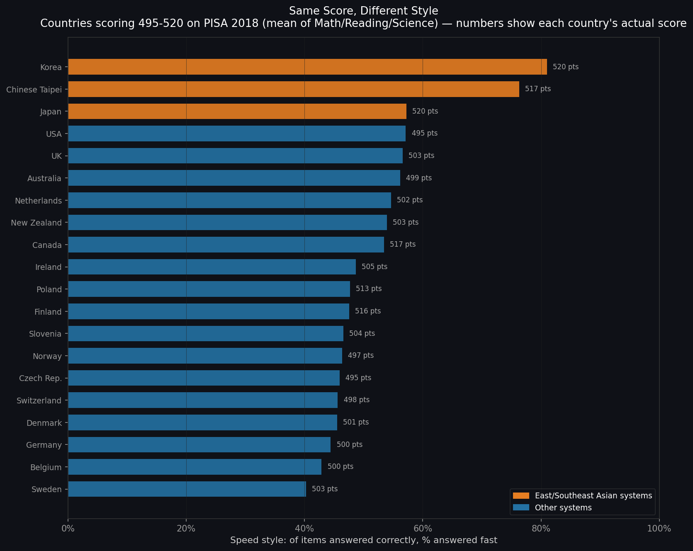
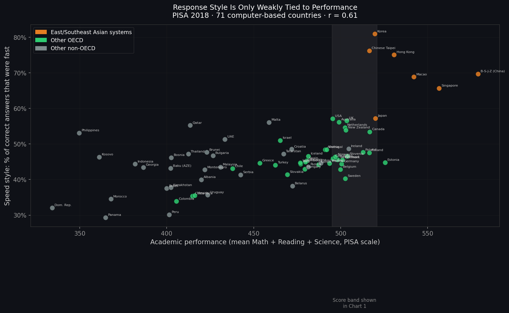
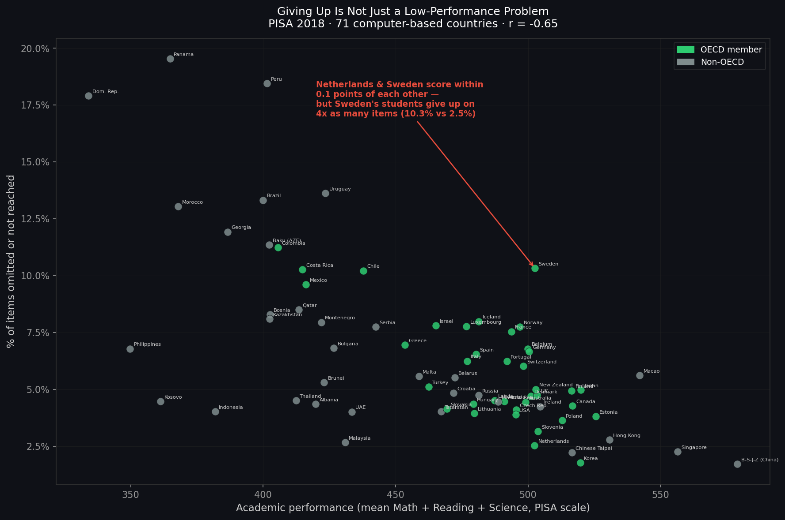
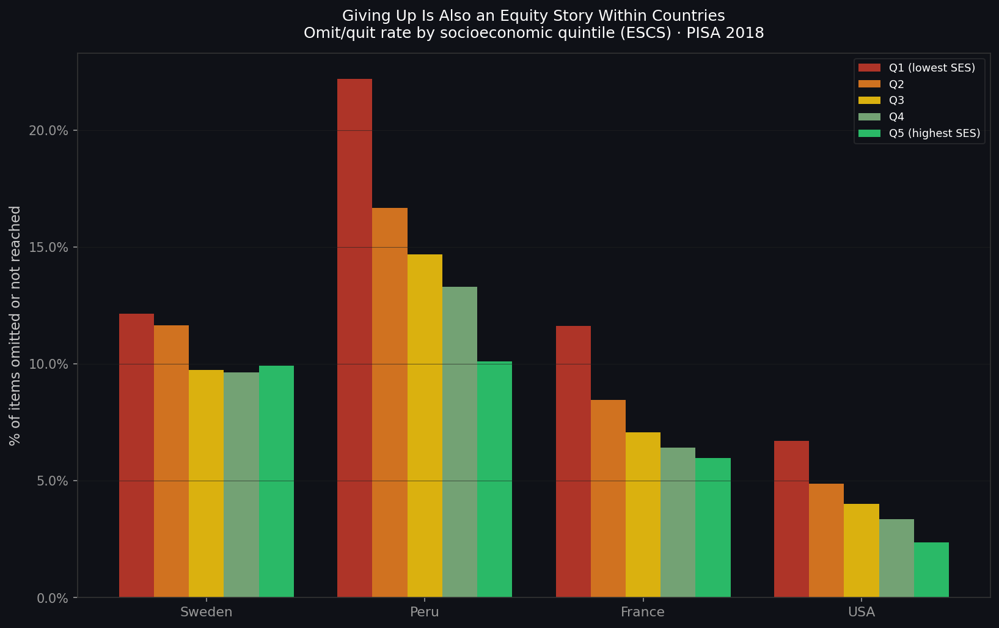

Two students can land on the exact same PISA score and have almost nothing else in common: one blazed through the test, confident and fast; the other worked every problem slowly, right up to the deadline; a third gave up on one item in five. Using the item-by-item timing data buried inside PISA's computer-based test — not just final scores, but how long each student took on each question — a clear picture emerges of how differently the world's students reach the same number.
When PISA moved to computer-based testing, it started quietly logging something most people don't know exists: for every item a student saw, the system recorded not just whether they got it right, but how long they took to make their first move. Combine that timing with the scored answer, and every single item response sorts into one of five behavioral profiles.
"Fast" and "slow" are defined relative to each item, not a universal stopwatch cutoff — an item's own median response time splits its respondents into the two groups, so a 10-second multiple-choice question and a 3-minute interactive simulation are each judged on their own terms. This analysis covers 311 Math, Reading, and Science items with clean per-item timing, for the 551,792 students (71 of 79 countries) who took the computer-based version of the test — the 8 paper-based countries have no timing data and are not part of this story.
Strip away raw accuracy and ask a narrower question: of the items a student got right, what share did they answer fast? Call this a student's "speed style." It says nothing about how many questions they got right — only how they got there. Comparing 20 countries that all scored within a 25-point band (495–520 on PISA's 500-point scale) shows this style is not a byproduct of ability at all.

Korea's students answer 81% of their correct items fast. Sweden's students, scoring essentially the same overall, answer just 40% of theirs fast — the rest come from slow, deliberate work. Both systems land in the same place on the PISA scale. They get there in opposite ways.
| Country | Score | Speed style |
|---|---|---|
| Korea | 520 | 81.0% |
| Chinese Taipei | 517 | 76.3% |
| Japan | 520 | 57.2% |
| USA | 495 | 57.1% |
| Netherlands | 502 | 54.6% |
| Canada | 517 | 53.4% |
| Finland | 516 | 47.6% |
| Sweden | 503 | 40.3% |
Across all 71 computer-based countries, academic performance explains only a moderate share of the variation in speed style (r = 0.61) — and almost all of that correlation comes from one tight regional cluster. East and Southeast Asian systems (Korea, Chinese Taipei, Hong Kong, Macao, Singapore, B-S-J-Z China, Japan) average 70.6% speed style. Every other system in the dataset averages 44.8%. There is no smooth slope from "slow" to "fast" as scores rise — there is a distinct group sitting apart from everyone else.

Remove the seven East/Southeast Asian systems from the picture and the relationship between score and style all but disappears — high, middle, and lower performers alike span nearly the same 30–58% speed-style range. Whatever drives the East Asian pattern — item familiarity, test-taking coaching, cultural norms about a timed exam, or something else PISA doesn't measure directly — it is not simply "being better at the test."
Omission follows the same pattern as speed style: related to performance, but loosely (r = −0.65) — and the exceptions are the story. The clearest case sits almost exactly on the trend line's biggest outlier pair: the Netherlands and Sweden.

Two neighboring, similarly wealthy Northern European countries, indistinguishable on the headline score, differ by a factor of four in how often their students simply stop trying on a question. Whatever is driving that gap — test-taking culture, time pressure, motivation, familiarity with high-stakes timed exams — it has nothing to do with underlying ability, since the two countries' students are, on average, equally capable.
Within most countries, omission concentrates sharply among disadvantaged students. Peru's lowest-SES quintile omits more than twice as often as its highest. France and the USA show the same pattern, at smaller scale. But Sweden — the country with the second-highest overall omit rate in this dataset — breaks that rule entirely.

| Country | Q1 (lowest SES) | Q5 (highest SES) | Gradient |
|---|---|---|---|
| Peru | 22.2% | 10.1% | Steep (−12.1 pp) |
| France | 11.6% | 6.0% | Steep (−5.7 pp) |
| USA | 6.7% | 2.4% | Steep (−4.3 pp) |
| Sweden | 12.1% | 9.9% | Flat (−2.2 pp) |
In Peru, France, and the USA, giving up is disproportionately something poorer students do — the familiar equity pattern seen throughout PISA data. In Sweden, omission is high and roughly uniform across every socioeconomic quintile, including the wealthiest. That points to something closer to a shared national test-taking norm than a disadvantage-driven behavior.
PISA 2018 cognitive process file (SPSS_STU_COG.zip). Alongside the
standard scored response for each computer-based item, this file carries
genuine process variables — time to first action, timing of last visit, and
number of actions. Restricted to ADMINMODE == 2 (computer-based
administration): 551,930 of 606,627 students, 71 of 79 countries. The 8
paper-based countries (Argentina, Jordan, Lebanon, Moldova, North Macedonia,
Romania, Saudi Arabia, Ukraine) have no item timing and are excluded.
311 items (60 Math, 83 Science, 168 Reading) with a single scored-response column plus a time-to-first-action column. Each (student, item) response is classified using the item's own SPSS value-label text (not hardcoded codes, since one item uses a non-standard scheme): Omit/Quit if coded "Not Reached" or "No Response"; otherwise Correct if full credit, else Wrong; then Fast or Slow based on whether time-to-first-action is below or at/above that item's own median among attempted responses. This yields five profiles: Fast-Right, Slow-Right, Fast-Wrong, Slow-Wrong, Omit/Quit.
Of a student's correctly answered items, the share answered fast:
n_fast_right / (n_fast_right + n_slow_right). This isolates
response-time style from raw accuracy — two students with identical accuracy
but opposite styles get identical scores but very different speed-style values.
Student-level profile shares (denominator = items actually administered to
that student, per PISA's rotated-booklet design; median 46 of 311 items).
Country-level statistics are W_FSTUWT-weighted means — point
estimates, not full BRR standard errors. Academic performance = mean of 10
plausible values across Math, Reading, Science, averaged across domains.
Descriptive, not causal — this does not test why a system produces one style over another. Partial-credit items (15 of 311) are collapsed into "wrong." "Fast" and "slow" are relative to each item's own response-time distribution, not an absolute duration. "Not Reached" (ran out of time) and "No Response" (skipped deliberately) are combined into one Omit/Quit category. Results apply only to the 71 countries that ran the computer-based assessment.